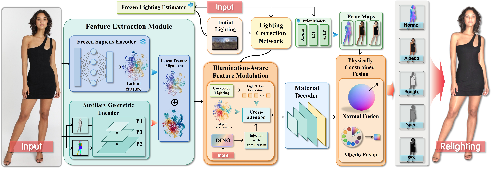
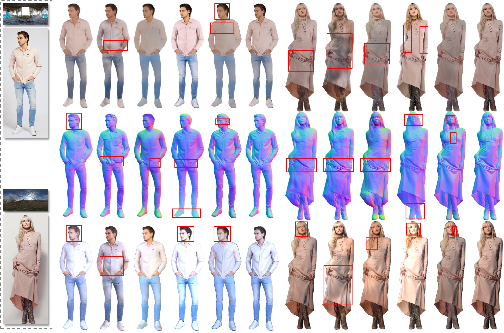

Lighting-aware features
Corrected lighting cues are injected into latent features to better separate illumination from reflectance.

Single-image human material estimation aims to recover physically based rendering (PBR) attributes of a human from a single image, enabling realistic relighting for immersive multimedia applications. Although recent methods have achieved promising results on synthetic benchmarks, their predictions on real images may suffer from residual illumination artifacts, which lead to unrealistic relighting results. We argue that this limitation mainly arises from the domain gap between synthetic and real data in both material appearance and illumination, which aggravates the ambiguity between illumination and reflectance during inference.
To address this issue, we propose S2R, a novel two-stage synthetic-to-real framework for single-image human material estimation. In the first stage, we train the model on high-quality synthetic data with supervision under multiple constraints, and introduce an illumination-aware feature injection module to improve the disentanglement of material properties from shading. In the second stage, we selectively fine-tune the model on real images to transfer the knowledge learned from synthetic supervision to the real domain. This adaptation process is guided by self-supervised reconstruction and a teacher-student regularization, which together reduce the synthetic-to-real domain gap while preserving stable material estimation.
Extensive experiments on both synthetic and real-image benchmarks demonstrate that our method produces cleaner material estimation with fewer illumination residues and achieves more realistic relighting results than existing approaches.
Corrected lighting cues are injected into latent features to better separate illumination from reflectance.
External normal and albedo priors refine ambiguous regions while retaining physically meaningful material maps.
A selective teacher–student strategy adapts domain-sensitive modules without erasing synthetic supervision.

S2R reduces illumination residues in estimated material maps and improves relighting on real human images.

Please use the following DOI when citing this work. The complete BibTeX entry will be updated after the ACM Digital Library record becomes active.
10.1145/3767308.3835903
Open DOI